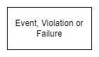
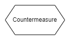
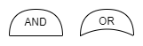
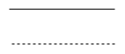
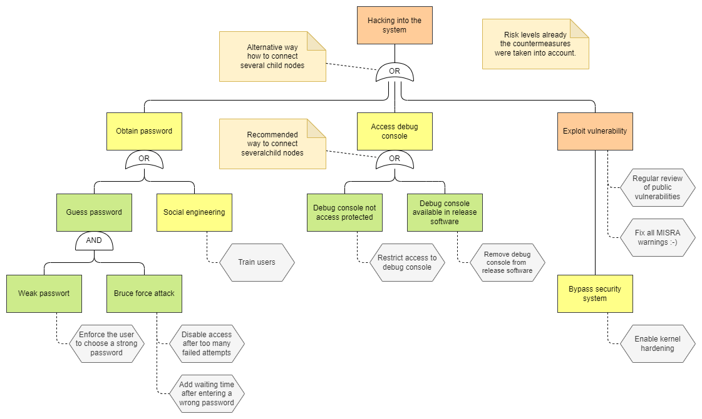

Attack and Fault Tree Diagram
Attack and fault trees diagrams show how an asset or target might be corrupted. They are used to describe threats and possible attacks to realize those threats as well as possible malfunctions and sources of errors.
Diagram Model
Name |
Graphical Representation |
Description |
|---|---|---|
Event, Violation or Failure |
 |
The diagrams consist of a root, children and leaves. From the bottom up, child nodes are conditions which must be satisfied to make the direct parent node true; when the root is satisfied, the attack is complete or a safety goal is not achieved. |
Countermeasure |
 |
Countermeasures like safety mechanisms or security controls are usually modelled as annotations, but in this diagram they can also be shown as extra elements. |
AND and OR |
 |
If a parent node has more than one child node, they must be connected using an AND or an OR element. It is recommended to place these elements directly at the parent node, which reduces the number of lines in the diagram, see example below. |
Connections |
 |
Nodes are connected with straight lines, countermeasures with dashed lines. |
{kind=link}
{kind=link}
{kind=link}
{kind=link}
Each node has a risk level, which may vary depending on whether or not countermeasures are considered. These levels are usually described and discussed in an extra table or special analysis tools. Optionally, the nodes can be colored according to the Risk Levels table. It must be clear from the context whether the risk levels are shown with or without countermeasure considerations. If not, add an explicit description to the diagram.
Example
{kind=link}
